TARS.ai 使用手冊（中文）2.0
目錄
（開啟檔案時請選擇「是」以更新目錄）
1. 創建新對話與對話紀錄
本章說明如何開始新對話、調整對話設定，以及檢視與管理對話紀錄。
1.1 創建新對話
進入 TARS.ai 後，畫面左側為功能列，由上而下為側邊欄開關、新對話、對話紀錄、代理建構器、提示、技能與 MCP；畫面上方可切換通用腦／專用腦、選擇模型、設定模型參數與新增多重對話；畫面中央為對話框。
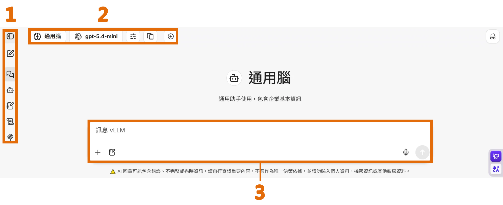
1.1.1 開始對話
使用者可點選左側功能列的新對話圖示創建新對話。對話環境設定完畢後，於對話框「訊息 vLLM」中輸入問題或提示內容，輸入完畢後點選右下角之送出鍵，即可將問題發送至系統；回覆內容可能因使用者選擇的模型而有所不同。
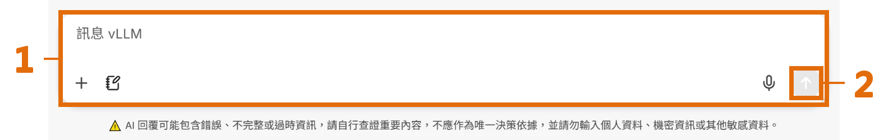
1.1.2 進階設定
使用者可點選畫面上方圖示展開下拉式選單，依據使用情境選取【通用腦／專用腦／先前建立之 Agent】；若欲修改回覆模型，可點選模型圖示展開下拉式選單進行修改。
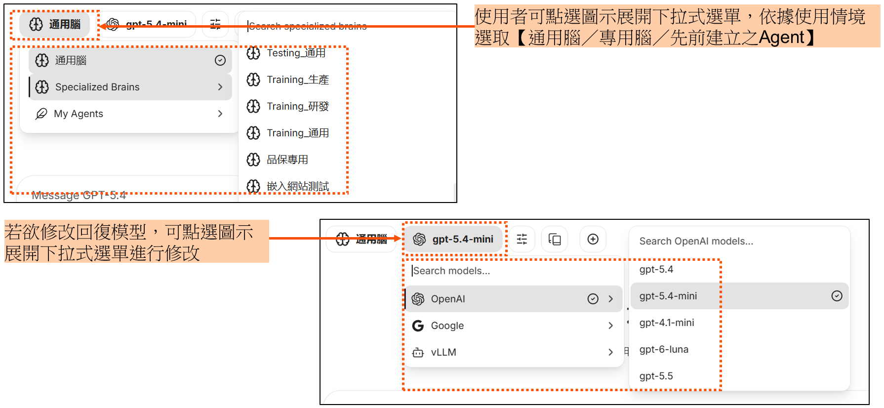
若欲調整模型回覆參數，點擊模型參數圖示，畫面中央將彈出【模型參數】視窗以進行調整。使用者可於「溫度」移動滑桿以設定生成內容的隨機性。數值較低，回答較穩定、保守、重複性較高；數值較高，則回答較有創意、表達方式多樣。請留意，不同模型選擇將影響可調整的參數。
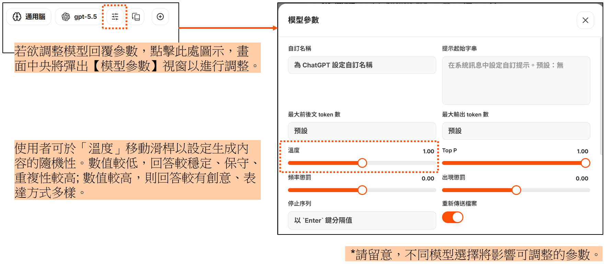
推理功能需在系統中啟用 Responses API 方可運作。啟用後，可依據任務需求調整以下參數，以平衡處理效能與輸出品質：
推理模式：可設為標準或專業。
推理強度：投入的算力與深度。
推理摘要：摘要的內容範圍。
推理脈絡：上下文納入的詳盡程度。
所有參數設置完成後，點擊【確認】以儲存。
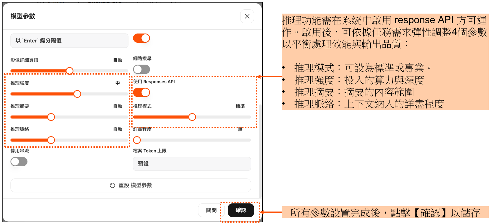
1.1.3 多重對話
為方便使用者比較不同模型對相同 Prompt 的回覆差異，系統提供【新增多重對話】功能。點選該圖示後，即可在單一對話情境內並排檢視各模型的輸出結果。
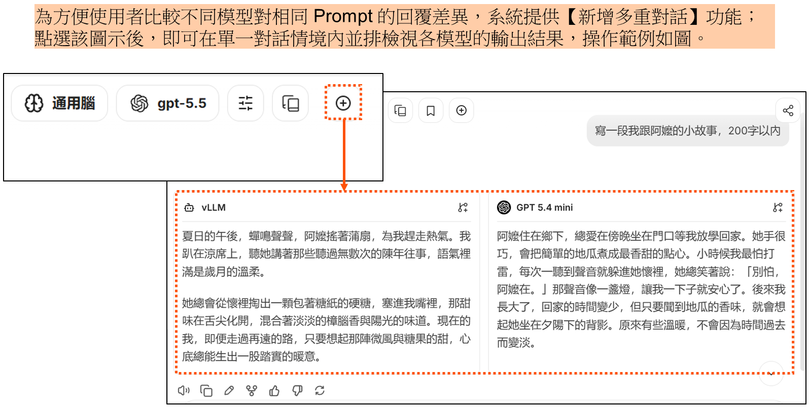
1.1.4 加入書籤
使用者可將常用或重要的對話加入書籤，日後可快速找到。於對話中點選上方的書籤圖示，再點選「新書籤」，輸入標題與描述（選填），勾選「添加到當前對話」後點選「儲存」。加入書籤的對話，可於對話清單的篩選功能中依「書籤」篩選，詳見〈1.2.4 篩選對話〉。
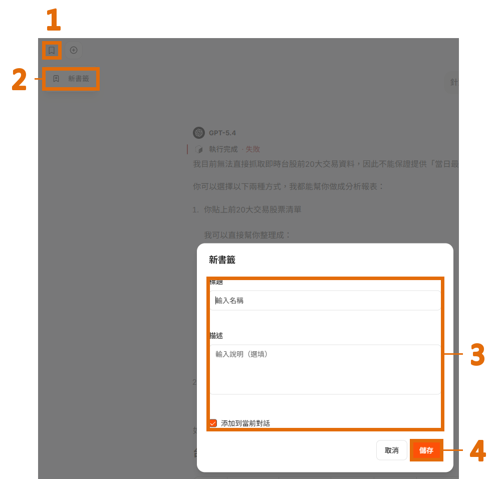
1.2 對話紀錄
1.2.1 檢視對話紀錄與專案
使用者可點選左側欄位的聊天紀錄圖示展開側邊欄，檢視過往對話紀錄。側邊欄展開後，點選「所有專案」可顯示現有專案清單；點擊專案名稱可查看詳細資訊，若欲進行編輯，亦於此處操作；點選右上角「新增專案」可建立新專案。
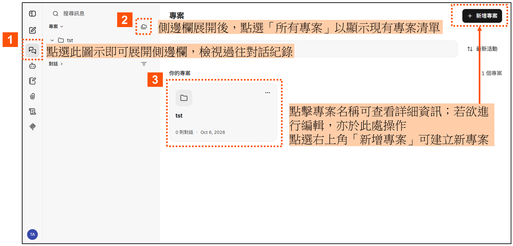
1.2.2 專案管理
進入專案頁面後，可於「Instructions」點選「編輯」，設定此專案中對話的偏好或背景資訊；點選右上角「新對話」，或於側邊欄專案右側點選編輯圖示，即可在專案中新增對話。
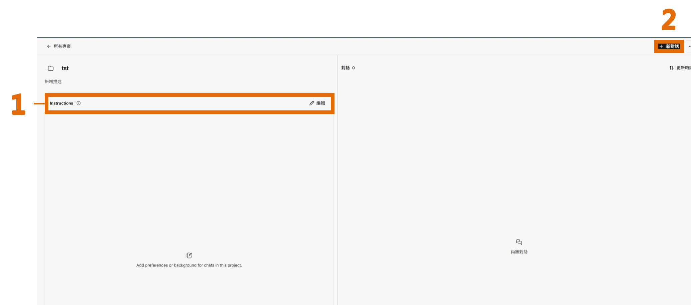
點選側邊欄專案右側的「···」，可選擇開啟專案、編輯專案或刪除；刪除專案時，其中的對話不會被刪除。
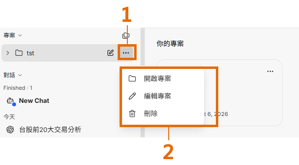
1.2.3 歷史對話
使用者可於側邊欄專案下方檢視所有歷史對話紀錄，並依需求進行篩選與排序。篩選可依照對話狀態選擇「Active／Archive」；排序可選擇排序依據為「最後更新時間／建立時間／標題名稱」，並指定排序方向為「由新到舊／由舊到新」，以快速從大量紀錄中找到所需對話。
點擊任一歷史對話右側的「···」功能選單，可針對該筆對話進行分享、置頂對話、重新命名、複製對話、變更專案、封存與刪除等管理。
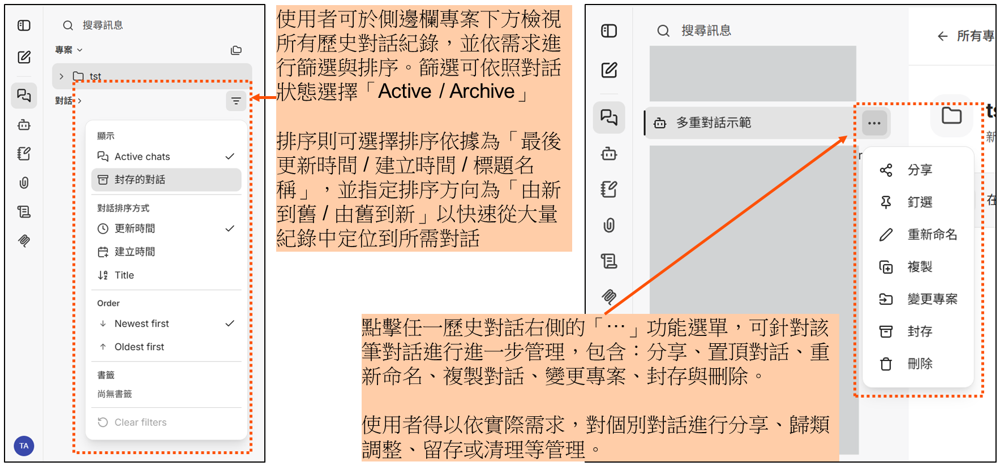
1.2.4 篩選對話
點選側邊欄「對話」右側的篩選圖示，選擇「Filter」，可依書籤、更新時間、建立時間、端點篩選，或只顯示有附件（Has attachments）、已分享（Shared only）的對話；點選「Clear filters」可清除篩選。
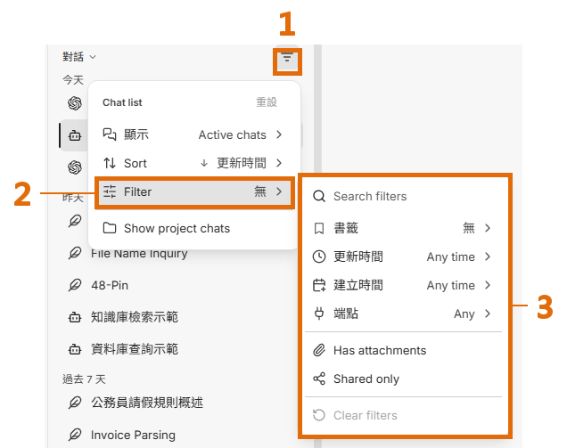
2. 工具
「工具」用於讓 AI 在對話中執行特定工作，例如搜尋網路、查詢資料庫、產生檔案等。使用者可於對話框左下角點選「＋」，選擇要使用的工具。
2.1 開啟工具
使用者可於對話框左下角點選「＋」，開啟選單。以下將依照由上而下之順序介紹選單內容：
(1) 搜尋列：輸入名稱，可快速找到工具或技能。
(2) ATTACH：點選「從本機電腦」，於檔案總管選擇檔案後點選「開啟」，即可將檔案附加至對話。
(3) TOOLS：平台提供的工具，點選即可開啟，各工具的使用方式請參閱以下各節。
(4) 「＋」按鈕：開啟選單後會顯示為「×」，點選即可關閉選單。
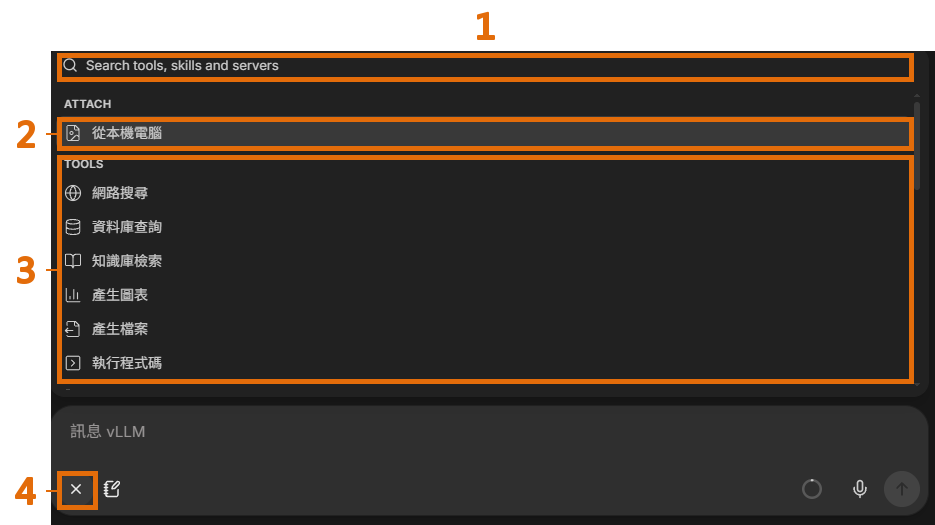
選單下方另有「技能」與「YOUR FILES」。「YOUR FILES」會列出先前上傳過的檔案，點選即可直接附加至對話，不需重新上傳；點選右側「顯示全部」可查看所有檔案。不論使用通用腦、專用腦或 Agent，看到的檔案皆相同，內容與左下角頭像中的「我的檔案」一致。
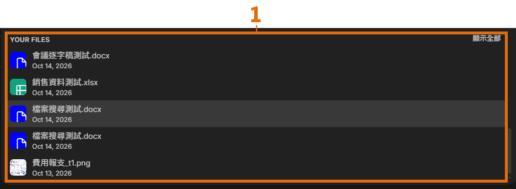
點選工具後，對話框下方會出現該工具的標籤，表示已開啟，可同時開啟多個工具。若不需使用，點選標籤右側的「×」即可移除。
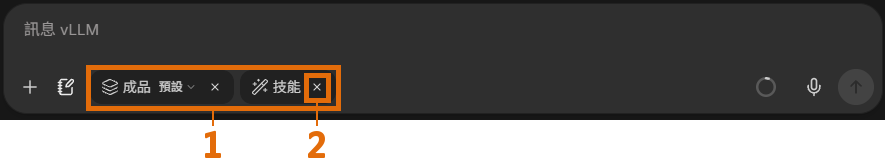
附加檔案後，即可直接針對檔案內容提問；需要查詢網路等即時資訊時，請先開啟對應的工具。
2.2 網路搜尋
「網路搜尋」用於搜尋網路上的最新資訊，例如新聞、市場動態等。使用者可點選「＋」→「網路搜尋」開啟此工具，開啟後對話框下方會顯示「網路搜尋」標籤。
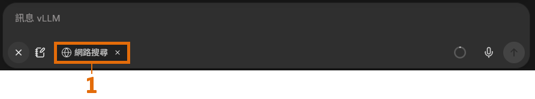
開啟後輸入提示詞並送出，AI 搜尋網路後，回覆上方會顯示「已搜尋網頁」，內文各段落後方會標示資料來源網站。
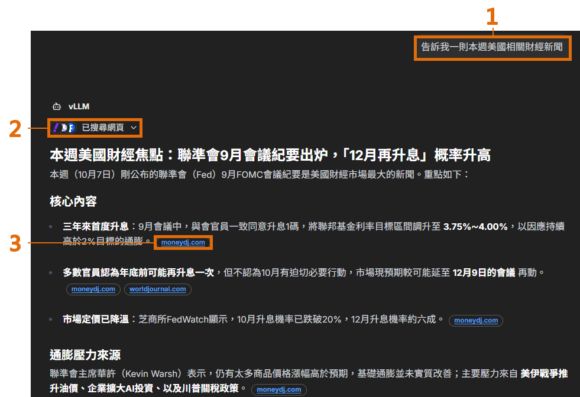
提示詞範例：
告訴我一則本週美國相關財經新聞
2.3 資料庫查詢
「資料庫查詢」用於查詢綁定的內部資料庫。使用者可點選「＋」→「資料庫查詢」開啟此工具，再以文字描述要查詢的內容。
AI 會讀取資料庫結構並執行查詢，回覆上方會顯示「已執行 N 個操作」，點選可展開查看各步驟；查詢結果以表格呈現，並附上使用的 SQL 指令。
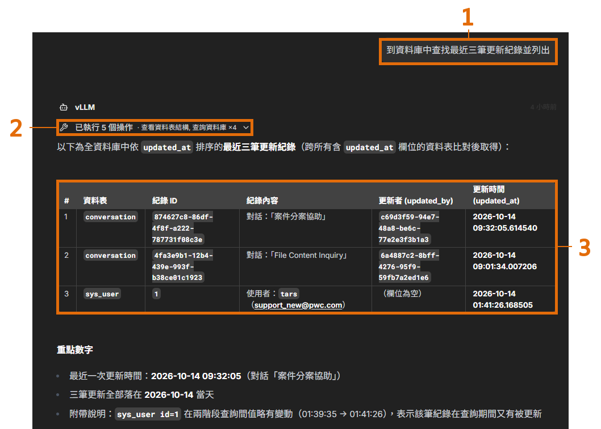
提示詞範例：
到資料庫中查找最近三筆更新紀錄並列出
2.4 知識庫檢索
「知識庫檢索」用於查詢綁定的內部知識庫，並附上來源文件作答。使用時請先於對話畫面左上角點選選單，選擇「專用腦」中已綁定知識庫的專用腦，再點選「＋」→「知識庫檢索」開啟此工具。
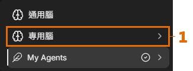
AI 檢索知識庫後，回覆上方會顯示「搜尋知識庫」，回答最後會列出參考的來源檔案。
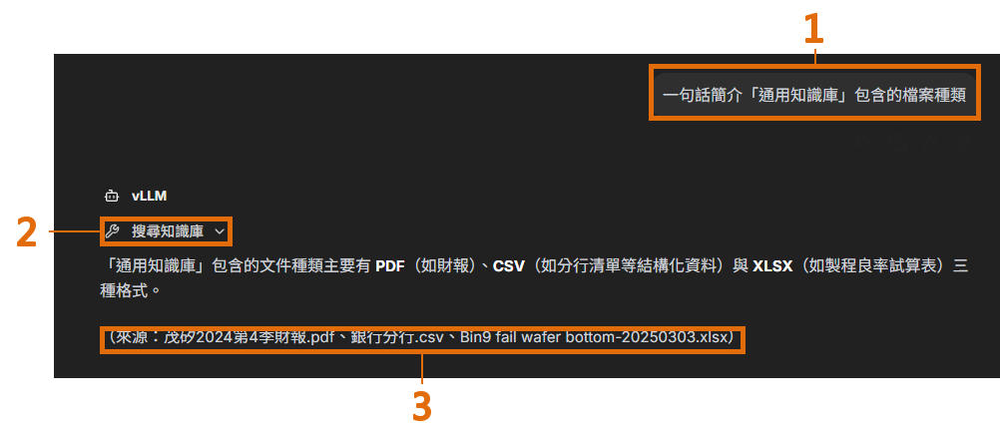
提示詞範例：
一句話簡介「通用知識庫」包含的檔案種類
2.5 產生圖表
「產生圖表」用於將查詢到的資料繪製成圖表，可與「知識庫檢索」或「資料庫查詢」搭配使用。以下範例同時開啟「知識庫檢索」與「產生圖表」，AI 會先搜尋知識庫，再進行「繪製圖表」。
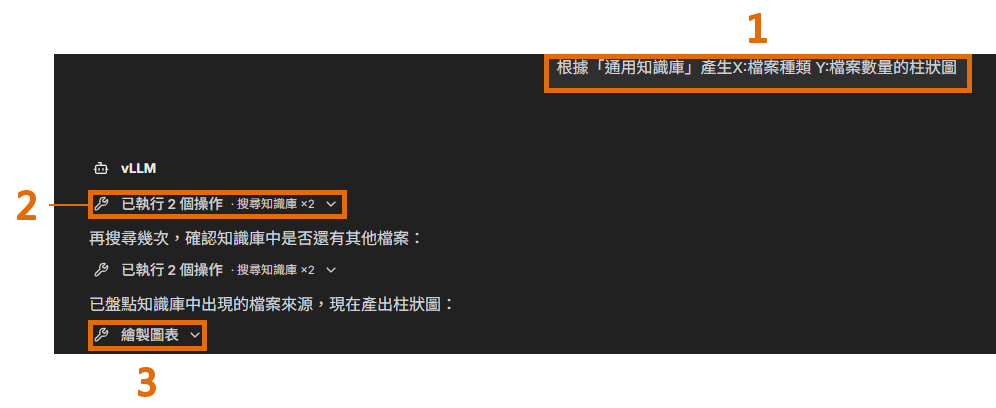
完成後，回覆中會顯示統計表與圖表。
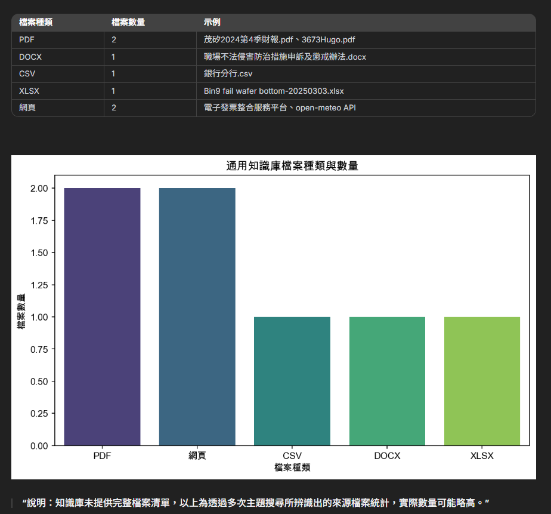
提示詞中可寫明圖表類型、X 軸與 Y 軸，例如本例的「X：檔案種類 Y：檔案數量的柱狀圖」。
提示詞範例：
根據「通用知識庫」產生X:檔案種類 Y:檔案數量的柱狀圖
2.6 產生檔案
「產生檔案」用於依對話內容、附加的試算表或資料庫，產生可下載的 PDF、Word、Excel 或 PowerPoint 檔案。以下範例接續〈2.2 網路搜尋〉的對話，同時開啟「網路搜尋」與「產生檔案」後輸入需求，回覆上方會顯示「產生檔案」，內文會出現檔案連結。
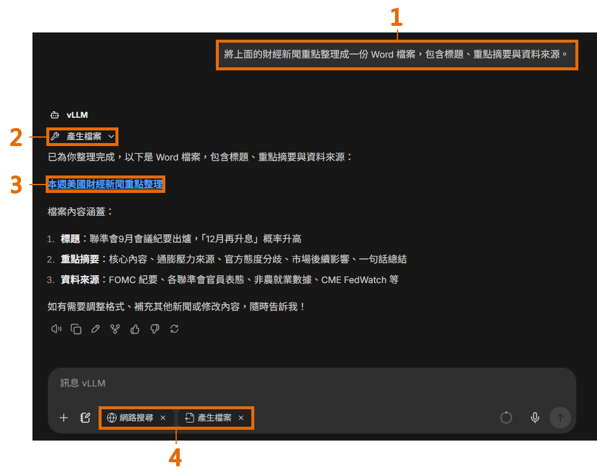
需要產生檔案時，請先開啟「產生檔案」；未開啟時，AI 無法產生可下載的檔案。
點選連結後，檔案會下載至電腦，開啟即可編輯。
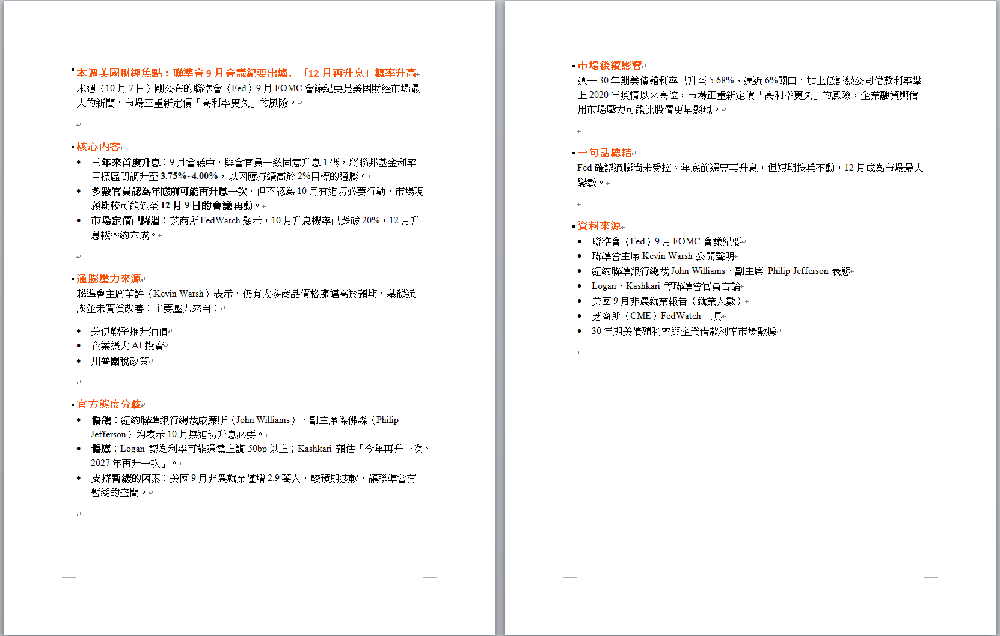
提示詞範例：
將上面的財經新聞重點整理成一份 Word 檔案，包含標題、重點摘要與資料來源。
2.7 執行程式碼
「執行程式碼」用於撰寫並執行程式，進行計算、資料分析及檔案處理。需要精確計算或分析表格資料時，請先開啟此工具。
開啟後附加檔案並輸入需求，回覆上方會顯示「已執行 N 個操作」，展開後可查看 AI 讀取的資料結構與使用的查詢指令。
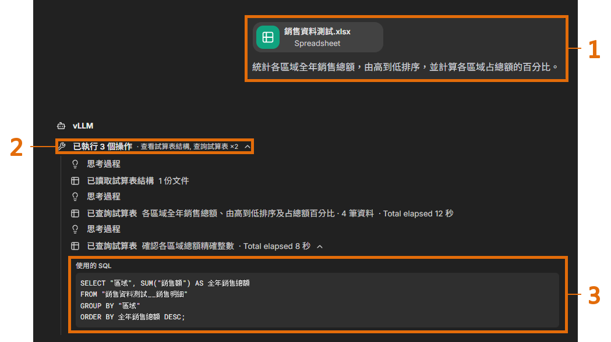
計算完成後，結果以表格呈現。
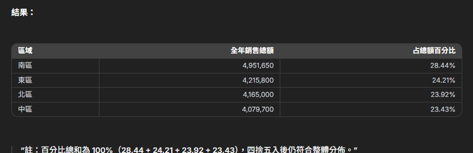
提示詞範例：
統計各區域全年銷售總額，由高到低排序，並計算各區域占總額的百分比。
2.8 檔案搜尋
「檔案搜尋」用於從附加的檔案中擷取相關內容來回答。附加的檔案篇幅較長，或一次附加多份檔案時，建議先開啟「檔案搜尋」，AI 會從檔案中找出與問題相關的內容來回答。
開啟後，點選「＋」→「從本機電腦」附加檔案，再輸入提示詞。
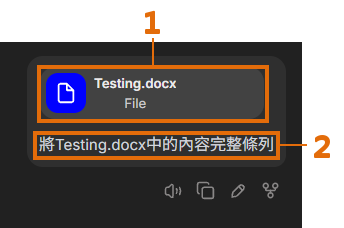
AI 會依檔案內容回覆，同一份檔案可接著追問。
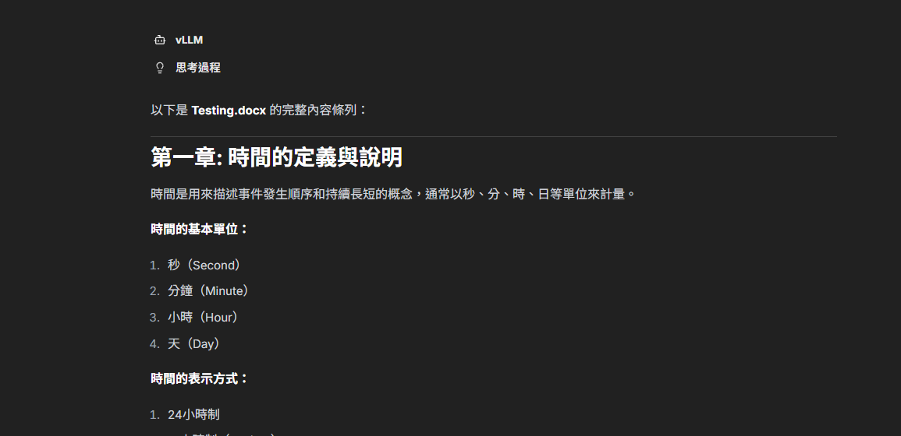
提示詞範例：
將Testing.docx中的內容完整條列
2.9 技能
「技能」用於讓 AI 依技能中設定的步驟與格式完成工作。開啟「技能」後，AI 會依提示詞自動選用合適的技能；選單下方的「技能」清單會列出目前可使用的技能。技能的建立方式，請參閱第 6 章。
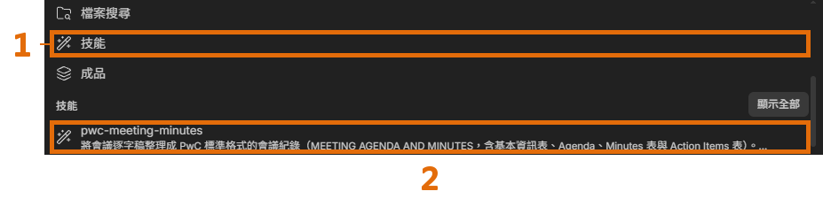
以整理會議紀錄為例，同時開啟「技能」與「成品」後，附加會議逐字稿並輸入「請幫我整理這份會議紀錄」，回覆會顯示已執行的技能名稱。
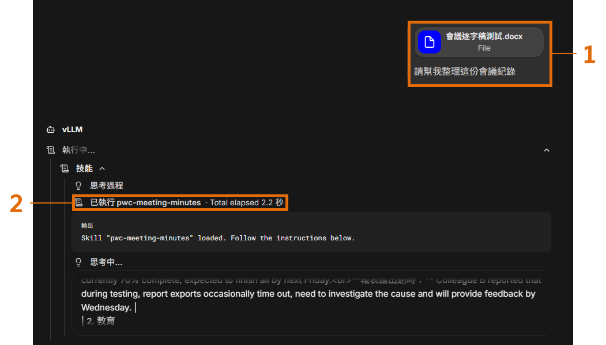
完成後，會議紀錄依技能指定的格式產出。
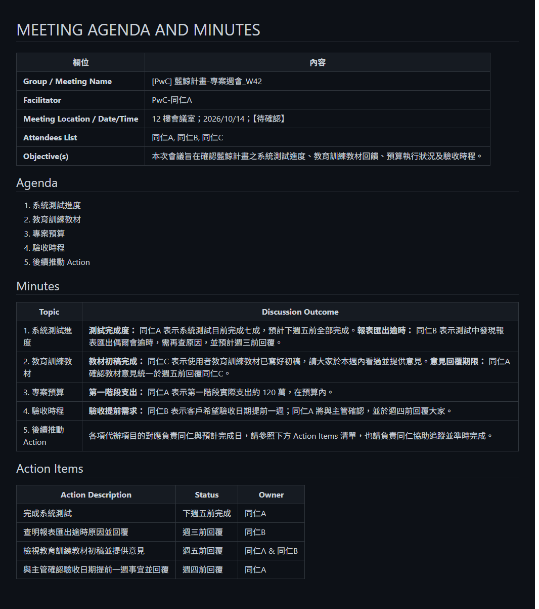
2.10 成品
「成品」用於將網頁、文件等內容呈現於右側面板，可直接瀏覽。開啟後輸入需求，回覆中會出現成品，右側面板顯示網頁內容。
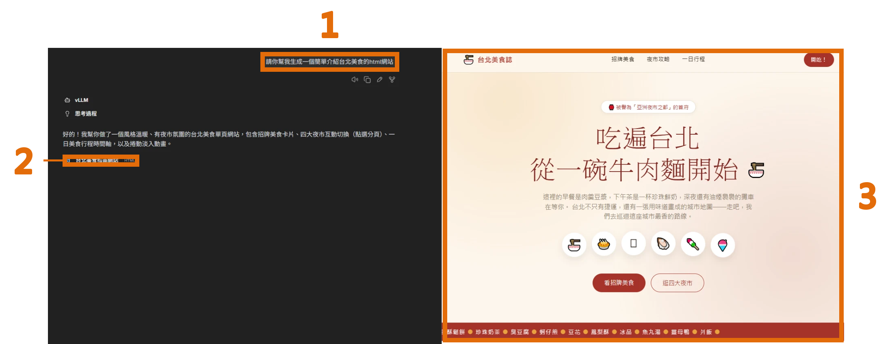
提示詞範例：
請你幫我生成一個簡單介紹台北美食的html網站
3. 代理建構器（Agent）
「代理建構器」用於建立 AI 助理（Agent），使用者可在此預先設定 Agent 的模型、說明、工具與技能。建立完成後，使用者只需選擇該 Agent 並提供本次要處理的資料，Agent 即會依照設定的流程與格式完成任務。
3.1 建立 Agent
3.1.1 進入代理建構器
使用者可於系統左側欄位點選「代理建構器」圖示，即可開啟代理建構器面板。
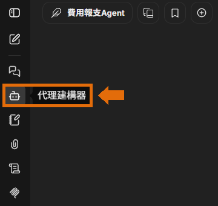
點選後，您將看到以下面板。代理建構器由上而下依序為「建立 Agent」選單、頭像、名稱與描述、模型、說明、工具、技能及檔案內容，下方則有「進階」、「管理員設定」與「建立」按鈕，以下將依序介紹。
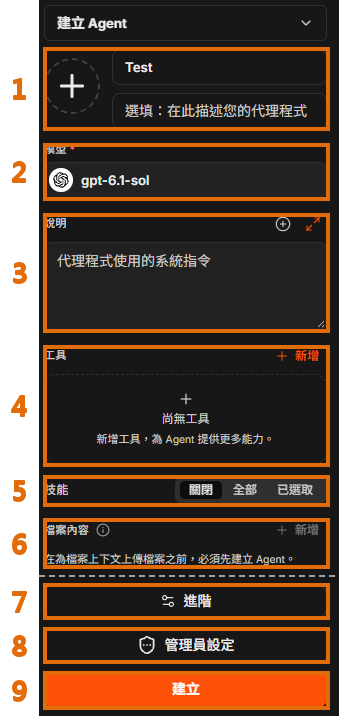
3.1.2 建立 Agent
點選面板上方的下拉式選單並選擇「建立 Agent」，即可依序設定以下項目。
(1) 頭像、名稱與描述
點選左側的「＋」圖示（滑鼠移至圖示時顯示「上傳圖片」）可上傳 Agent 的頭像圖片；於「必填：代理人的名稱」欄位輸入 Agent 名稱，並於「選填：在此描述您的代理程式」欄位輸入 Agent 的用途說明。名稱與描述將顯示於 Agent 清單中，建議清楚說明用途與適用對象，例如名稱「會議紀錄彙整助理」。
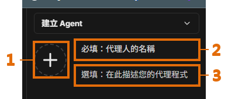
(2) 模型
請先於「名稱」欄位輸入 Agent 名稱，再點選「模型」欄位；未輸入名稱時，不會開啟「模型參數」視窗。
點選「模型」欄位，即可開啟「模型參數」視窗。請先於「提供者」下拉式選單選擇供應商，再於「模型」下拉式選單選擇欲使用的模型，選擇後視窗將顯示該模型可調整的參數，完成後點選「確認」即可（參數說明請參閱〈3.1.3 設定模型參數〉）。
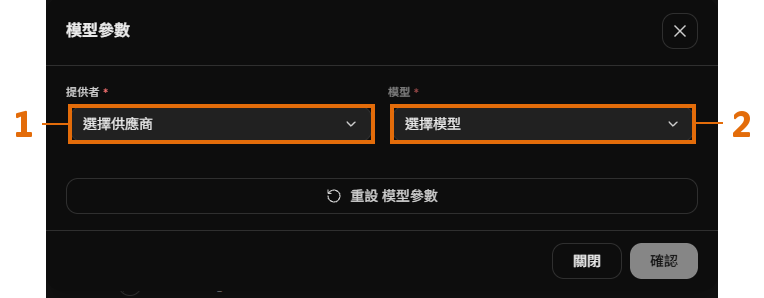
(3) 說明
於「說明」欄位輸入 Agent 使用的系統指令，說明內容於此 Agent 的每次對話中皆會生效。點選欄位右上角的展開圖示，可開啟較大的編輯視窗。
點選欄位右上角的「⊕」圖示，可於選單中選擇「目前日期」、「目前使用者」、「UTC ISO 日期時間」或「目前日期與時間」，將變數插入說明中；插入後欄位會顯示以雙大括號標示的變數代碼，對話時系統會以實際的日期、時間或使用者名稱取代。
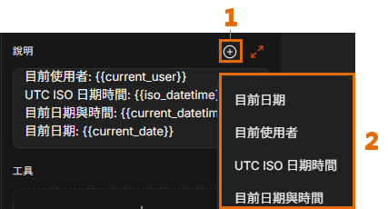
建議依「角色」、「任務流程」、「規則」及「例外處理」四個段落撰寫，說明範例請參閱〈3.3 Agent 範例：會議紀錄彙整助理〉。
(4) 工具
點選「工具」右側的「＋ 新增」，即可開啟「工具庫」，選擇 Agent 可使用的工具（此部分請參閱〈3.1.4 新增工具〉）。
(5) 技能
於「技能」選擇 Agent 使用技能的方式，各選項說明如下（技能的建立請參閱〈6.1.2 建立技能〉）：
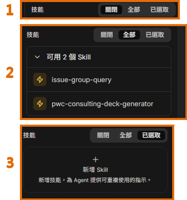
關閉：此 Agent 不使用技能。
全部：下方將列出目前所有可用的技能（例如「可用 2 個 Skill」），Agent 可使用其中任一技能，並依各技能的描述自行判斷是否使用。
已選取：Agent 僅使用指定的技能。尚未選取時顯示「新增 Skill」，選取方式如下；需固定輸出格式的 Agent，建議選擇此方式。
選擇「已選取」後，點選「新增 Skill」即可開啟「技能」視窗。使用者可於「搜尋技能…」欄位輸入名稱，或依「全部」、「由你建立」、「我的最愛」分頁篩選，點選欲套用的技能即可加入。若尚未建立所需的技能，可點選視窗左上角的「＋」，直接開啟「撰寫技能指示」視窗建立新技能（各欄位說明請參閱〈6.1.2 建立技能〉）。
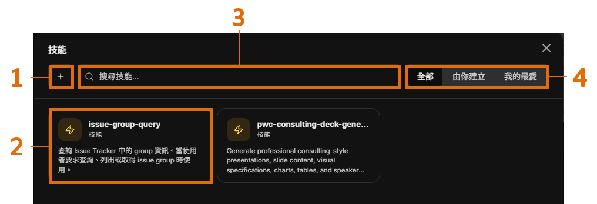
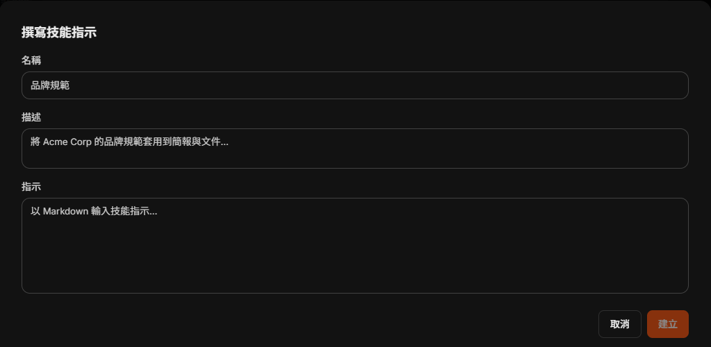
加入後，所選取的技能會列於「技能」下方，點選右側「×」可移除；如需加入其他技能，可點選「技能」右側的「＋」。
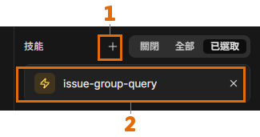
(6) 檔案內容
點選「檔案內容」右側的「＋ 新增」，可上傳 Agent 每次回覆都需參考的檔案，例如公司範本或作業規範。請注意，需先完成 Agent 的建立，才能上傳檔案內容。
(7) 建立
完成上述設定後，點選面板下方「建立」按鈕，即可完成 Agent 的建立。建立完成後，可於代理建構器上方的下拉式選單選取此 Agent 進行修改（請參閱〈3.2.2 編輯 Agent〉）。
3.1.3 設定模型參數
點選代理建構器的「模型」欄位，即可開啟「模型參數」視窗，完成設定後點選「確認」即可儲存。
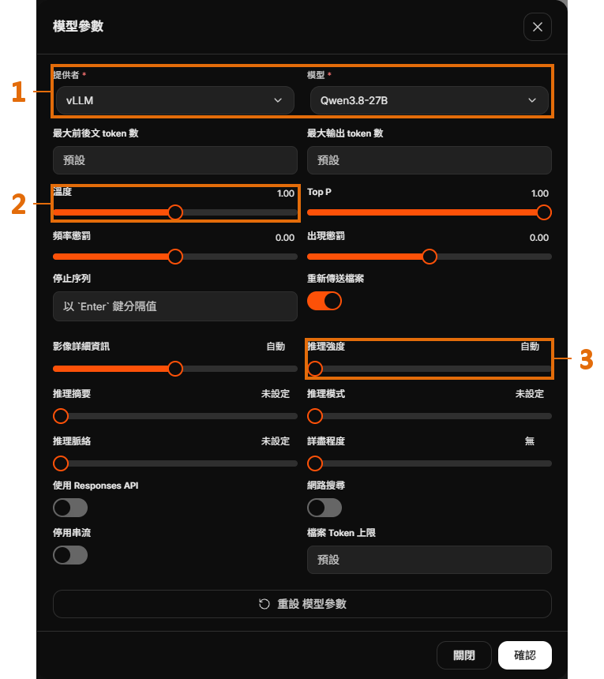
於「提供者」與「模型」下拉式選單中，選擇您欲使用的模型。「vLLM」為公司地端部署的模型，建議優先使用；如需使用雲端模型（如 OpenAI），建議選擇 mini 版本以節省費用。
使用者可於「溫度」移動滑桿以設定生成內容的隨機性。數值較低，回覆較穩定、保守、可預期；數值較高，則回覆較有創意、表達方式多樣。會議紀錄、報表等格式固定的任務，建議設定於 0～0.3。
使用者亦可於「推理強度」移動滑桿以設定模型回答前的思考深度。數值較低，回應速度較快；數值較高，回答較周全，但速度較慢、成本較高。一般問題建議維持「自動」。
其他參數說明如下，一般使用者若無特別需求，可維持預設值；部分參數僅適用於特定提供者或模型。
最大前後文 token 數：模型每次回覆時可讀取的內容上限（包含對話紀錄與檔案）。數值較低可節省資源，但較早的對話內容可能不會被參考。
最大輸出 token 數：單次回覆的長度上限。數值過低時，回覆可能被截斷。
Top P：另一種控制用詞多樣性的方式，數值較低時只選用可能性較高的用詞。建議與溫度擇一調整，維持預設值即可。
頻率懲罰：數值越高，越避免重複使用相同的詞句。
出現懲罰：數值越高，越傾向帶入新的主題或內容。
停止序列：模型輸出遇到指定文字時即停止回覆，可輸入多組，以 Enter 鍵分隔。
重新傳送檔案：開啟後，每次提問都會將先前上傳的檔案再次交給模型參考；檔案較大或對話較長時，可關閉以節省 token。
影像詳細資訊：模型讀取圖片時的解析度。數值較高可辨識較多細節，但耗用較多 token。
推理摘要：設定是否顯示模型思考過程的摘要。
推理模式：（待確認）
推理脈絡：（待確認）
詳盡程度：設定回覆內容的詳細程度。
使用 Responses API：改以 OpenAI 新版介面連線，部分推理與搜尋功能需開啟，一般維持預設值即可。
網路搜尋：使用模型內建的網路搜尋功能。
停用串流：開啟後，回覆會在全部產生完成後一次顯示，不會逐字出現。
檔案 Token 上限：從上傳檔案中最多讀取的內容量，超過的部分不會交給模型參考。
點選「重設 模型參數」可將所有參數恢復為預設值。
3.1.4 新增工具
點選「工具」右側的「＋ 新增」，即可開啟「工具庫」視窗。使用者可於左側依「原生」、「工具」、「MCP 伺服器」、「動作」等分類篩選，或於上方「搜尋工具…」欄位輸入工具名稱。
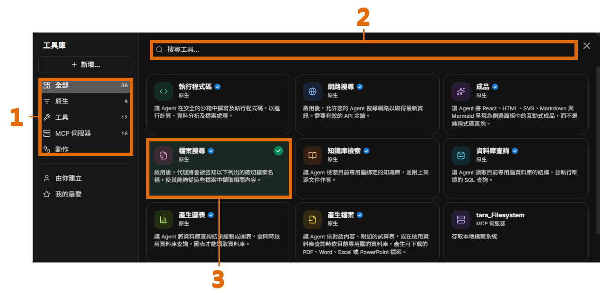
點選欲使用的工具後，該工具卡片右上角會出現勾選圖示，即表示已加入 Agent；關閉工具庫後，代理建構器的「工具」下方會列出已加入的工具與數量。
各工具的功能說明，可於工具庫中的工具卡片上查看。
「MCP 伺服器」分類列出平台已掛載的 MCP 工具（此部分請參閱〈7. MCP 工具〉）。建議僅加入任務所需的工具；加入過多工具，可能使 Agent 選錯資料來源。
3.1.5 進階設定
點選面板下方的「進階」，即可開啟「進階設定」頁面，可設定以下項目：
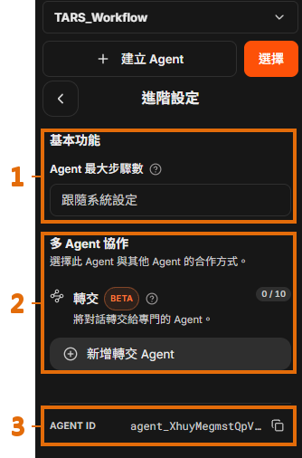
Agent 最大步驟數：設定 Agent 完成一次任務時最多可執行的步驟數，預設為「跟隨系統設定」，一般使用者若無特別需求，可維持預設值。
轉交（BETA）：設定此 Agent 在需要特定專業能力時，可將對話轉交給哪些 Agent。每項轉交設定都會建立一個轉交工具，連同對話脈絡將對話交給專門的 Agent，最多可設定 10 個。
點選「新增轉交 Agent」，於新增的欄位中選擇欲轉交的 Agent 即可。已加入的轉交 Agent 會依序列出，右上角顯示已設定的數量（例如「2/10」）；點選右側下拉圖示可更換 Agent，點選「×」可移除。
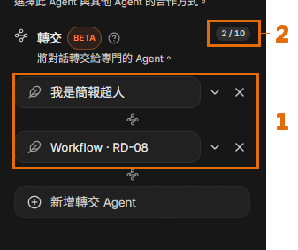
AGENT ID：編輯已建立的 Agent 時，頁面下方會顯示該 Agent 的識別碼，點選右側圖示即可複製，供系統串接或問題回報時使用。
3.2 使用與管理 Agent
3.2.1 使用 Agent
點選對話頁面左上角的 Agent 選單（顯示目前使用中的通用腦、專用腦或 Agent 名稱，例如「費用報支Agent」），於下拉式選單中點選「My Agents」，即可看到已建立的 Agent 列表，選擇欲使用的 Agent 即可開始對話。Agent 較多時，可於「搜尋 My Agents」欄位輸入名稱快速尋找。
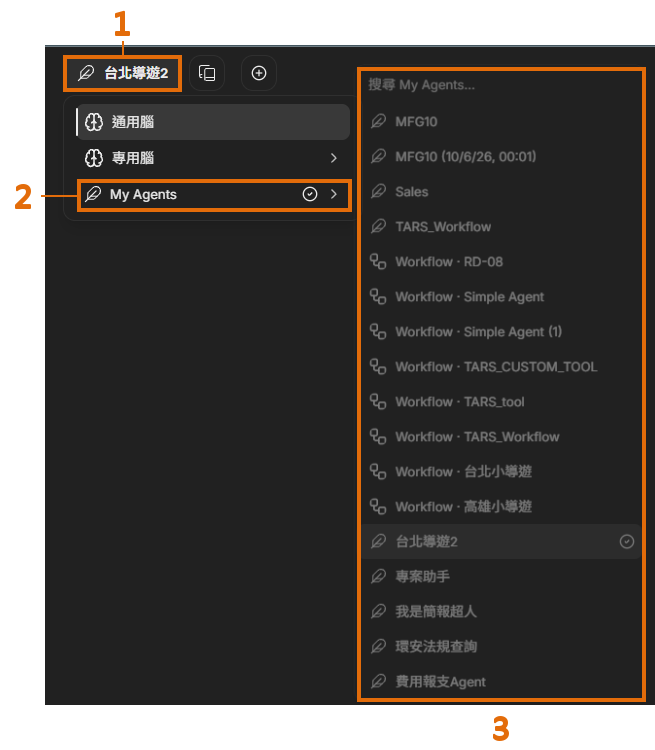
選擇後，對話頁面中央將顯示該 Agent 的名稱，於下方輸入框輸入訊息即可開始對話。如需切換回一般對話，於同一選單點選「通用腦」或「專用腦」即可。
3.2.2 編輯 Agent
於代理建構器上方的下拉式選單選取已建立的 Agent（例如「費用報支Agent」），面板即會顯示該 Agent 目前的設定，修改後點選「儲存」即可更新，各項設定的詳細說明請參閱〈3.1.2 建立 Agent〉。
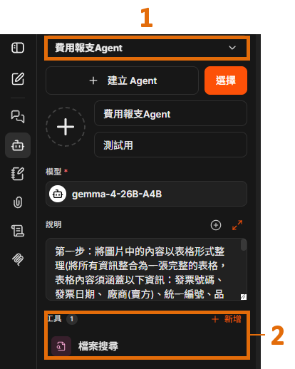
面板下方各按鈕的功能如下：
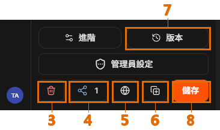
刪除（垃圾桶圖示）：刪除此 Agent。
分享：將 Agent 分享給其他使用者或群組，圖示旁的數字為已分享的對象數量（需由系統管理員開放權限，請參閱〈3.2.3 管理員設定〉）。
遠端存取（地球圖示）：設定此 Agent 的遠端存取。
複製 Agent：複製此 Agent，建立一份相同設定的新 Agent。
版本：查看此 Agent 的歷史版本。
儲存：儲存目前的修改。
修改說明內容後，建議以相同的測試資料重新執行，確認結果符合預期。
3.2.3 管理員設定
「管理員設定」供系統管理員依角色設定 Agent 相關權限，一般使用者無需設定。點選面板下方的「管理員設定」，於「角色」下拉式選單選擇欲設定的角色後，開啟或關閉以下權限，完成後點選「儲存」即可。
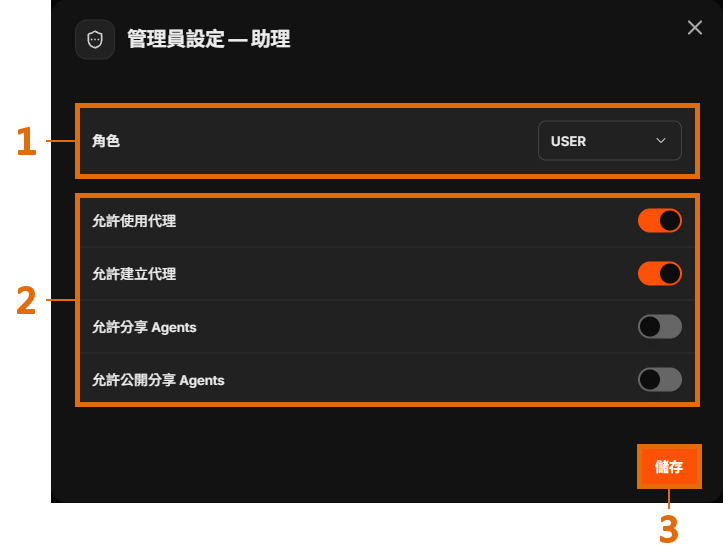
允許使用代理：允許該角色使用 Agent。
允許建立代理：允許該角色建立 Agent。
允許分享 Agents：允許該角色將 Agent 分享給其他使用者或群組。
允許公開分享 Agents：允許該角色將 Agent 公開分享給所有使用者。
分享 Agent 需由系統管理員開啟「允許分享 Agents」權限後，方可於編輯畫面點選分享圖示，將 Agent 分享給其他使用者或群組（請參閱〈3.2.2 編輯 Agent〉）；若無法分享，請洽系統管理員。
3.3 Agent 範例：會議紀錄彙整助理
本範例建立一個將會議逐字稿整理為公司標準會議紀錄格式的 Agent，各項設定如下：
名稱：會議紀錄彙整助理
描述：上傳會議逐字稿，自動整理成公司標準格式的會議紀錄。
模型：地端模型，溫度設定為 0.2。
說明：請參閱下方說明範例。
工具：檔案搜尋、執行程式碼、產生檔案。
技能：選擇「已選取」，並加入 pwc-meeting-minutes（請參閱〈6. 技能〉）。
說明範例（可直接貼入「說明」欄位）：
# 角色
你是「會議紀錄彙整助理」，負責把會議逐字稿整理成公司標準格式的會議紀錄。
# 任務流程
1. 確認輸入：檢查使用者是否已上傳逐字稿。沒有逐字稿時，請使用者上傳，不要自行編寫會議內容。
2. 確認基本資訊：從逐字稿找出會議名稱、日期、時間、地點、主持人、出席者；找不到的欄位，一次列出來請使用者補充。
3. 產出初稿：使用技能 pwc-meeting-minutes，依其格式規範產出完整會議紀錄。
4. 請使用者確認：初稿後請使用者確認，需要修改時只修改指定段落。
5. 產出檔案：使用者回覆 OK 後，產出 Word 檔。
# 規則
- 內容只能來自逐字稿，不得補上逐字稿中沒有的人名、日期、數字或決議。
- 使用繁體中文書面語，不保留口語贅字。
# 例外處理
- 無法判斷負責人、日期或狀態 → 標【待確認】並完成其餘內容。
- 沒有逐字稿或檔案無法讀取 → 說明狀況並詢問使用者。
4. Prompts 預設提示詞
「提示詞」用於儲存常用的提示內容，使用時可直接套用，不需每次重新輸入；提示詞中可設定變數，使用時再填入不同內容。
4.1 查看、建立與修改提示詞
4.1.1 查看提示詞
使用者可於系統左側欄位點選「提示」，即可展開提示工程頁面。若欲新增提示詞，可點擊「＋」號，展開側邊欄建立新提示；若欲編輯現有提示詞，點選欲編輯之項目名稱即可進入編輯頁面。
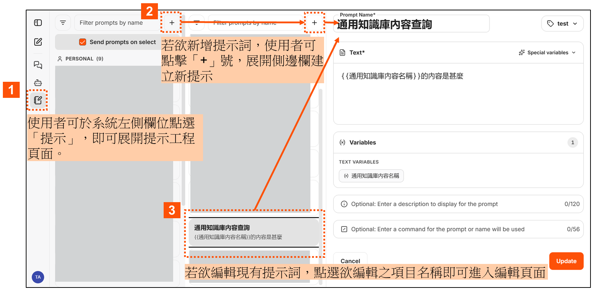
4.1.2 建立、修改提示詞
使用者可於右側欄位輸入提示名稱、選擇類別及提示文字。建立提示時，若提示中有需要在使用時變更的內容，可以用雙大括號包住變數名稱，將這些部分標記為變數，系統會自動偵測文字中所有該格式的標記，並在「變數」區列出對應的變數名稱。輸入完成後點擊「更新」，以儲存編輯內容。
4.2 設定專用腦層級預設提示詞
專用腦的提示詞需由後台設定。請點選左下角使用者頭像，接著點選「使用者與權限」並點選「專用腦管理」。
進入專用腦管理頁面後，於欲設定的專用腦點選提示詞管理圖示，進入設定。
於右側欄位輸入提示名稱（Prompt Name）、選擇提示分類（Category），並於 Text 欄位輸入提示內容；需要使用者於執行時填入的資訊，可使用變數格式建立，系統會自動擷取變數並顯示於 Variables 區域。另可選填提示說明，以及設定指令名稱（Command Name），以快速指令方式呼叫此提示詞。完成設定後，點擊「Create Prompt」建立提示詞。
4.3 在對話中套用提示詞
於對話框點選提示詞管理圖示，選擇要套用的提示詞；若提示詞含有變數，填入內容後點選「Insert」，提示詞即會帶入對話框。完整操作範例請參閱〈4.4 範例：使用提示詞撰寫商務信件〉。
4.4 範例：使用提示詞撰寫商務信件
以下以專用腦中的「商務信件」提示詞為例，說明如何使用含有變數的提示詞。使用者可點選對話框左下角的「我的提示」圖示，開啟提示詞清單；清單分為「專用腦」與「個人」兩區，點選「商務信件」即可使用。
點選後會出現提示詞中的變數欄位，請依序填入「收件對象」、「信件目的」、「重點內容」與「語氣」，完成後點選「插入」，提示詞即會帶入對話框，使用者可再修改後送出。
送出後，AI 會依提示詞中指定的格式產出商務信件。
本範例使用的提示詞內容如下，雙大括號中的文字為變數，使用時會出現對應的欄位：
請以專業扼要的繁體中文撰寫一封商務信件
收件對象：{{收件對象}}
信件目的：{{信件目的}}
需包含重點：{{重點內容}}
語氣：{{語氣}}
格式：主旨一行、內文三段（開頭問候以及目的、重點說明、結語與下一步），不超過300字
5. 我的檔案（My Files）
「我的檔案」（英文介面為「My Files」）用於集中管理使用者在對話中上傳過的檔案。在對話中附加的檔案會自動保存於「我的檔案」，之後可直接再次附加至對話，不需重新上傳。
5.1 進入我的檔案
使用者可於左下角點選頭像，在選單中點選「我的檔案」（英文介面為「My Files」），即可開啟「我的檔案」視窗。
5.2 查看與搜尋檔案
開啟後，視窗會列出所有上傳過的檔案，以及各檔案的名稱、日期、儲存空間、前後文與大小。以下將依照畫面位置介紹各項功能：
(1) 刪除：勾選檔案後即可刪除，詳見〈5.5 刪除檔案〉。
(2) 篩選檔案：輸入檔案名稱的關鍵字，即可快速找到檔案。
(3) 欄位設定：點選右側按鈕，可選擇清單要顯示的欄位。
(4) 排序與篩選：點選各欄位名稱旁的圖示，可依該欄位排序或篩選。
點選右側的欄位設定按鈕後，可勾選或取消勾選要顯示的欄位。
5.3 上傳檔案
「我的檔案」中的檔案，來自使用者在對話中附加的檔案。使用者可於對話框左下角點選「＋」，再點選「從本機電腦」，於檔案總管選擇檔案後點選「開啟」；上傳後，檔案會自動保存於「我的檔案」。
5.4 在對話中使用檔案
已上傳的檔案可直接再次附加至對話。使用者可於對話框左下角點選「＋」，在選單下方的「YOUR FILES」中點選檔案，即可附加至對話，不需重新上傳；點選右側「顯示全部」可查看所有檔案。
5.5 刪除檔案
於「我的檔案」視窗中勾選欲刪除的檔案，可一次勾選多個檔案，或勾選表頭的方框全選；勾選後，左上角的「刪除」按鈕即可點選。
點選「刪除」後，系統會直接刪除檔案，不會再次確認；刪除完成後，畫面上方會顯示「已成功刪除」。刪除前請再次確認勾選的檔案。
6. 技能（Skill）
「技能」用於將特定工作的步驟、格式規範與範例整理成可重複使用的作業手冊，供 Agent 在需要時載入使用。技能建立一次即可給多個 Agent 共用；更新技能後，所有使用該技能的 Agent 皆會同步套用。
6.1 技能管理
6.1.1 進入技能頁面
使用者可於系統左側欄位點選「技能」圖示，即可開啟技能面板，於「我的技能」查看目前已建立的技能；技能較多時，可於上方「依名稱篩選技能」欄位輸入名稱快速尋找。
點選清單中的技能，右側即會顯示該技能的名稱、建立者與建立日期、描述，以及技能指示的內容。
以 .zip 上傳且含附件的技能，名稱右側會顯示「＞」，點選即可展開檢視技能包含的檔案，例如 SKILL.md、assets（範本等素材）與 references（參考文件）資料夾。
6.1.2 建立技能
點選技能面板右上角的「＋」（建立技能），可選擇「撰寫技能指示」或「上傳技能」兩種方式建立技能。
(1) 撰寫技能指示
點選「撰寫技能指示」後，於視窗中依序輸入「名稱」、「描述」及「指示」，完成後點選「建立」即可。名稱限小寫英文字母、數字與連字號，不可使用中文（各欄位的寫法請參閱〈6.2 撰寫技能〉）。
(2) 上傳技能
點選「上傳技能」後，將檔案拖放至視窗中，或點選視窗以選取檔案，即可上傳。檔案需求如下：
.md 檔案：必須包含以 YAML 格式撰寫的技能名稱與說明（即〈6.2 撰寫技能〉所述之開頭資訊）。
.zip 或 .skill 檔案：必須包含 SKILL.md；若技能需搭配範本或程式，可將其與 SKILL.md 置於同一資料夾後一併壓縮上傳。
檔案大小：不得超過 50 MB。
6.1.3 管理員設定
「管理員設定」供系統管理員依角色設定技能相關權限，一般使用者無需設定。點選技能面板下方的「管理員設定」，於「角色」下拉式選單選擇欲設定的角色後，開啟或關閉以下權限，完成後點選「儲存」即可。
允許使用技能：允許該角色使用技能。
允許建立技能：允許該角色建立技能。
允許分享技能：允許該角色將技能分享給其他使用者或群組。
允許公開分享技能：允許該角色將技能公開分享給所有使用者。
6.2 撰寫技能
技能的內容決定 Agent 執行工作的方式與品質。建議依以下步驟撰寫，並可直接套用下方範本。
Step 1 決定名稱
於「名稱」欄位輸入技能名稱，限小寫英文字母、數字與連字號（kebab-case），並能看出用途，例如 meeting-minutes、weekly-report。輸入中文時會出現錯誤提示，如下圖所示。
Step 2 撰寫描述
於「描述」欄位寫出技能「做什麼」以及「什麼時候使用」。AI 會依描述判斷是否使用此技能，描述不清楚時，技能可能不會被使用；描述須為 20～1,024 字元。建議套用以下句型：
將〈輸入〉整理成〈輸出〉。當使用者〈情境 1〉或〈情境 2〉時使用。
範例：將會議逐字稿整理成公司標準格式的會議紀錄（含議程、討論重點與待辦事項）。當使用者上傳會議逐字稿，或要求整理會議紀錄時使用。
Step 3 撰寫指示
於「指示」欄位以 Markdown 格式撰寫工作內容，建議依序包含「作業步驟」、「輸出格式」、「寫法範例」、「注意事項」及「檢查清單」五個段落，可直接複製以下範本並替換〈 〉中的內容：
# 〈技能名稱〉
## 作業步驟
1. 確認使用者已提供〈輸入資料〉；缺少時先詢問，不要自行編寫。
2. 〈處理步驟〉
3. 〈處理步驟〉
4. 依「輸出格式」產出結果。
## 輸出格式
- 〈區塊 1〉：〈寫法〉
- 〈區塊 2〉：〈寫法〉
## 寫法範例
原文：〈一段原始資料〉
整理後：〈依規則整理後的結果〉
## 注意事項
- 內容只能來自使用者提供的資料，不得自行補充。
- 無法判斷的內容標示【待確認】。
## 檢查清單
- [ ] 〈輸出前要確認的項目 1〉
- [ ] 〈輸出前要確認的項目 2〉
撰寫「寫法範例」時，建議提供一組原文與整理後的對照，AI 較能產出一致的結果。
以 .md 檔建立技能（選用）
技能是給 AI 讀的純文字說明，不會被編譯或執行，因此不需要撰寫程式語法、標頭檔或程式進入點。唯一有固定格式的是「開頭資訊」：以 .md 檔上傳時，檔案開頭須以兩行「---」包住技能的名稱（name）與描述（description）；以「撰寫技能指示」視窗建立時，名稱與描述有各自的欄位，系統會自動處理，不需撰寫開頭資訊。開頭資訊之外的內容皆可自由撰寫，「#」、「-」等符號僅用於分段，不加符號 AI 亦能理解。
開頭資訊的欄位如下（依 LibreChat 官方規定，實際限制以平台為準），一般只需填寫 name 與 description：
name（必填）：技能名稱，限英文小寫、數字與連字號，第一個字不能是連字號，最多 64 字元。
description（必填）：技能描述，20～1,024 字元，系統依此判斷何時使用技能。
always-apply（選填）：設為 true 時，每次對話都自動套用，適合品牌規範等每次都要遵守的內容。
user-invocable（選填）：設為 false 時，使用者無法以「$」手動指定此技能。
disable-model-invocation（選填）：設為 true 時，AI 不會自動選用，僅能手動指定。
allowed-tools（選填）：使用此技能時額外開放的工具。
compatibility（選填）：註記需要的服務或執行環境。
欄位名稱與冒號須為半形英文，冒號後空一格再填內容。以下為三種常見寫法（淡橘底為選填欄位）：
範例一：只填名稱與描述，由 AI 判斷何時使用。
範例二：加入 always-apply: true，每次對話都自動套用。
範例三：加入 disable-model-invocation: true，AI 不會自動選用，以「$」指定時才使用。
1. 開啟 Windows 的「記事本」，於第一行輸入「---」，接著輸入「name： 技能名稱」與「description： 技能描述」各一行，再輸入一行「---」。
2. 於「---」下方貼上依 Step 3 撰寫的指示內容。
3. 點選「檔案」→「另存新檔」，檔名輸入 SKILL.md，「存檔類型」選擇「所有檔案」，「編碼」選擇「UTF-8」後儲存。請確認檔名未變成 SKILL.md.txt。
4. 於技能面板點選「＋」→「上傳技能」，將檔案拖放至視窗即可（請參閱〈6.1.2 建立技能〉）。
---
name: meeting-minutes
description: 將會議逐字稿整理成公司標準格式的會議紀錄。當使用者上傳會議逐字稿時使用。
---
## 作業步驟
1. 確認使用者已上傳逐字稿
2. 依「輸出格式」整理會議紀錄
Step 4 建立並加入 Agent
完成後點選「建立」。於代理建構器的「技能」選擇「已選取」，點選「新增 Skill」並選取此技能，即可讓 Agent 套用（請參閱〈3.1.2 建立 Agent〉）。
Step 5 測試與修改
以實際資料與 Agent 對話，確認產出符合預期；若結果不一致，於「寫法範例」或「注意事項」補充規則後重新測試。
6.3 技能範例：會議紀錄格式
技能「pwc-meeting-minutes」將會議逐字稿整理成公司標準格式的會議紀錄，並內附公司會議紀錄範本與產生 Word 檔的程式，因此產出的會議紀錄表頭、字型、表格與頁尾皆與公司範本一致，AI 產出的會議紀錄如下圖所示。
此技能的 SKILL.md 依用途可分為以下九個段落，可作為撰寫技能時的參考（完整內容請參閱附錄）：
(1) 名稱與描述：以「---」包住技能名稱與描述，AI 依描述判斷何時使用此技能。
(2) 角色與目標：說明此技能要完成的工作，以及哪些部分固定、哪些交由 AI 判斷。
(3) 作業步驟：依序列出處理流程，屬於「指示」。
(4) 輸出格式：列出會議紀錄各區塊的內容與寫法，屬於「標準」。
(5) 重點寫法與範例：以原文與整理後的對照，說明重點的寫法，屬於「標準」。
(6) 常見錯誤：列出常見的錯誤寫法與建議改法，屬於「注意事項」。
(7) 待辦事項寫法：說明 Action Items 各欄位的寫法，屬於「標準」。
(8) 輸出方式：說明有無程式執行時的產出方式，對應 Agent 的工具設定。
(9) 檢查清單：輸出前逐項確認的項目。
7. MCP 工具
本章簡要介紹 MCP 工具的概念。MCP 工具於平台上的操作方式（例如查看可用的 MCP 工具、加入 Agent 等）尚未於本章介紹，將另行補充。
7.1 MCP 工具概述
MCP（Model Context Protocol）是讓 AI 連接外部系統的標準介面。平台串接外部系統後，Agent 可透過 MCP 工具於對話中查詢或操作這些系統中的資料，例如查詢 Issue Tracker 的 issue、取得專案管理系統的資料等。
使用者於對話中提出需求時，Agent 會判斷是否需要使用 MCP 工具；呼叫後，外部系統回傳結果，Agent 再依結果整理並回覆使用者。
7.2 MCP 工具與工具、技能的差異
原生工具：平台內建的功能，例如網路搜尋、產生檔案（請參閱〈3.1.4 新增工具〉）。
MCP 工具：連接外部系統的工具，由 IT 部門串接與維護。
技能：可重複使用的作業說明，可於指示中寫明何時、如何使用特定的 MCP 工具（請參閱〈6. 技能〉）。
7.3 後續說明
MCP 工具於平台上的操作方式，例如查看可用的 MCP 工具、將 MCP 工具加入 Agent 等，尚未於本章介紹，將另行補充；詳細說明亦將另行安排課程介紹。如有串接外部系統的需求，請與 IT 部門討論與協作。
附錄 技能範例：pwc-meeting-minutes（SKILL.md）
以下為技能 pwc-meeting-minutes 的 SKILL.md 全文：
---
name: pwc-meeting-minutes
description: 將會議逐字稿整理成 PwC 標準格式的會議紀錄（MEETING AGENDA AND MINUTES，含基本資訊表、Agenda、Minutes 表與 Action Items 表）。當使用者上傳會議逐字稿、錄音轉文字檔，或要求整理會議紀錄、週會紀錄時使用。
---
# PwC 會議紀錄彙整
依公司週會紀錄的格式，將會議逐字稿整理成會議紀錄。
版面與欄位依本文件規定；重點歸納與負責人判斷，依逐字稿內容整理。
## 作業步驟
1. 確認輸入：確認已取得逐字稿。會議名稱、日期、時間、地點、主持人與出席者，先從逐字稿判斷；無法判斷的欄位標示【待確認】，不自行填寫。
2. 區分議題：依討論主題將逐字稿分成 3～5 個 Topic，依會議進行順序排列，最後一個 Topic 為「後續推動 Action」。
3. 整理重點：每個 Topic 整理 1～6 個重點，重點下可再列 0～4 個細項。
4. 整理待辦事項：將會中提到「誰要做什麼」的事項，逐項列入 Action Items。
5. 依文末檢查清單確認後輸出。
## 輸出格式
| 區塊 | 內容 | 範例 |
|---|---|---|
| 頁首 | MEETING AGENDA AND MINUTES | 固定文字 |
| Group / Meeting Name | [PwC] 客戶或專案-會議名稱_週次 | [PwC] ABC-AI 專案週會_W10 |
| Facilitator | 公司-姓名 | PwC-同仁A |
| Meeting Location / Date/Time | 地點；日期 YYYY/M/D；時間 HH:MM~HH:MM | Teams 線上、2026/10/7、09:57~10:47 |
| Attendees List | 依公司分兩組，以逗號分隔 | 同仁A, 同仁B, 同仁C |
| Objective(s) | 以「本次會議旨在…」開頭，簡述會議目的 | 本次會議旨在說明專案進度… |
| Agenda | 編號清單，項目與 Minutes 的 Topic 名稱相同 | 1. 專案進度說明 |
| Minutes | 兩欄：Topic／Discussion Outcome | 寫法見「重點寫法」 |
| Action Items | 三欄：Action Description／Status／Owner | 寫法見「待辦事項寫法」 |
## 重點寫法
每個重點的格式為「粗體標題：說明」，說明以一到三句為原則。
- 標題：4～12 字，點出該段主題，例如「UAT 時程」、「共編作業規範」。
- 說明：以發言人開頭，說明誰提出或確認了什麼，例如「同仁A 表示…」、「同仁B 確認…」。
- 數字、日期、版本與系統名稱照逐字稿保留，例如「9 月 22 日前」、「2.0 版本」。
- 句子之間以「；」連接，句尾加「。」。
- 細項列在重點下方，格式與重點相同，用於補充細節。
範例：
> 逐字稿：「我自己會覺得 PPT 跟 word 我同時做，其實會比我先做完一次 PPT，然後下次要來做 word 的時候，再把每個功能開起來截圖……來得更順暢。」「同意。」「我也覺得兩個同步做。」
>
> 整理後：**同步製作：** 同仁A 建議製作 PPT 時同步撰寫 Word，避免日後重複開啟功能、重新截圖；同仁B 與同仁C 皆同意。
### 常見錯誤
| 寫法 | 問題 | 建議改為 |
|---|---|---|
| 大家討論了共編的事情 | 沒有發言人與結論 | 同仁A 建議以桌面版開啟共編檔案，每日另存複本備份 |
| 呃，就是那個，他說可以 | 保留口語 | 改為書面語，刪除語助詞 |
| 照逐字稿順序逐句摘錄 | 未依主題整理 | 依主題歸納，合併同主題的發言 |
| 補上會中沒有提到的日期 | 內容與逐字稿不符 | 未提及的資訊不填寫，或標示【待確認】 |
## 待辦事項寫法
- Action Description：以動詞開頭，一列一件事，例如「提供資料庫示範用 Prompt」。
- Status：已完成、執行中、待提供、待討論，或「日期＋動作」，例如「9/8 提供」、「預計 9/10 提供」。
- Owner：負責的公司或人員，多方以「&」連接，例如「PwC & 客戶」。
- 最後一個 Topic「後續推動 Action」的內容為：「各項代辦項目的對應負責同仁與預計完成日，請參照下方 Action Items 清單，也請負責同仁協助追蹤並準時完成。」
## 輸出方式
A. 平台已開啟程式執行：將內容整理成 JSON（欄位見 examples/example_minutes.json），再執行以下指令，程式會套用公司範本 assets/template.docx 產出 Word 檔。
```
python /mnt/data/skills/pwc-meeting-minutes/scripts/build_minutes.py minutes.json 會議紀錄.docx
```
B. 未開啟程式執行：依「輸出格式」以 Markdown 表格輸出，重點以「**標題：** 說明」呈現，細項換行並加上「•」。使用者可再以「產生檔案」轉成 Word。
## 檢查清單
- [ ] Agenda 與 Minutes 的 Topic 名稱、順序一致
- [ ] 每個重點都有標題，說明中有發言人
- [ ] 數字、日期、系統名稱與逐字稿一致，沒有額外補充的資訊
- [ ] 會中提到的待辦事項都已列入 Action Items
- [ ] 已刪除口語贅字
- [ ] 無法判斷的欄位已標示【待確認】